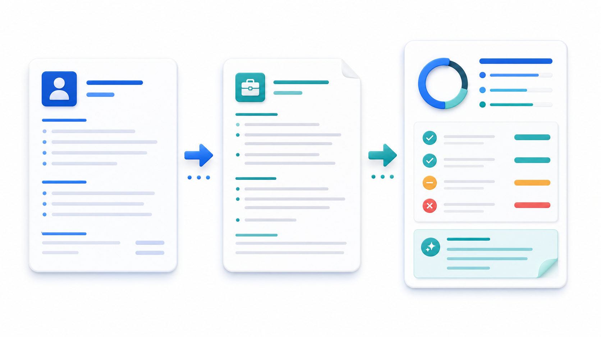

横幅：核心结论
建议进入原型验证；不直接进入完整开发。
目标用户
应届生、转岗求职者和需要多次修改简历的人群。
评分矩阵
| 维度 | 评分 | 证据分类 |
|---|---|---|
| 用户问题强度 | 4/5 | 推断 |
| 证据充分度 | 2/5 | 证据缺口 |
| 技术可行性 | 4/5 | 事实 |
评分只是预评审信号，不是投资排序或成功率承诺。
证据看板
事实：简历含个人信息。假设：用户愿意上传文本。推断：岗位化解释有价值。证据缺口：付费意愿。
评审委员会意见
产品、市场、用户、技术、复用、商业化、风险、执行和视觉 / 原型视角均建议先做小范围验证。
市场与竞品流程
用户问题明确，竞品和替代方案较多，差异化必须来自岗位化解释。
决策图
风险图
隐私风险和建议泛化风险最高，原型阶段必须说明未接入真实后端。
验证路线
7 天完成原型和访谈，14 天测试价格意向，30 天决定是否继续。
架构与路线
输入面板 -> 本地模拟分析 -> 建议卡片 -> 修改对比。
